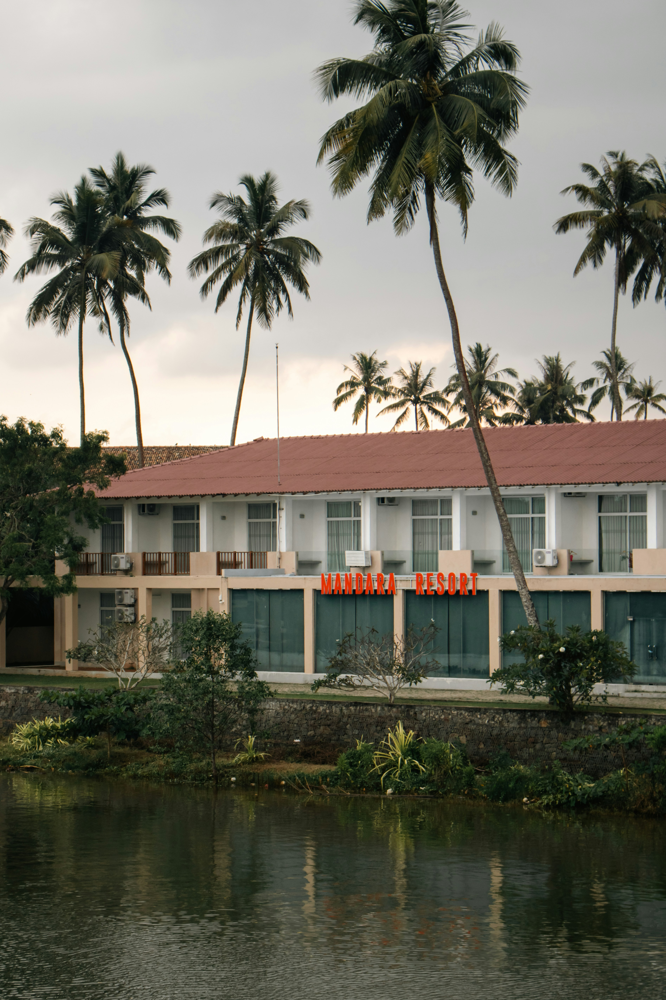

Taniti has a wide variety of lodging that range from an inexpensive hostel to one large, four-star resort. There are many small, family-owned hotels and a growing number of bed and breakfasts. All types of lodging are strictly regulated and regularly inspected by the Tanitian government.


